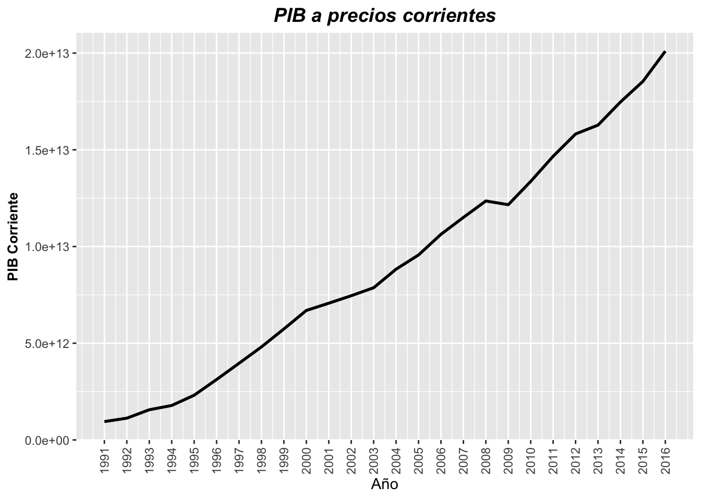
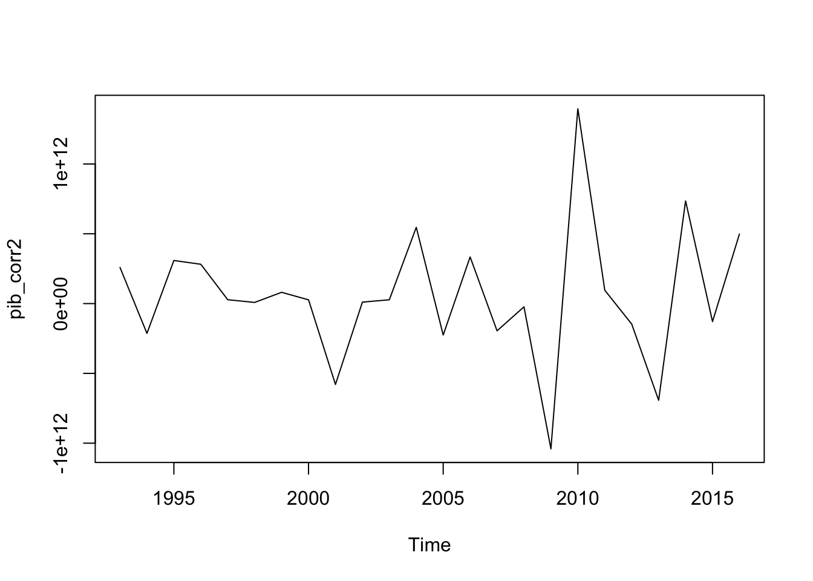
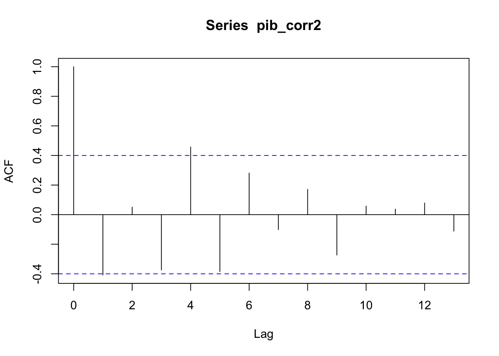
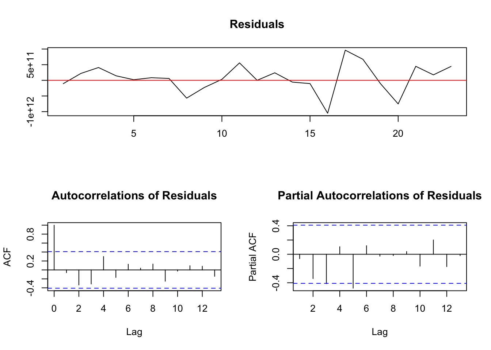
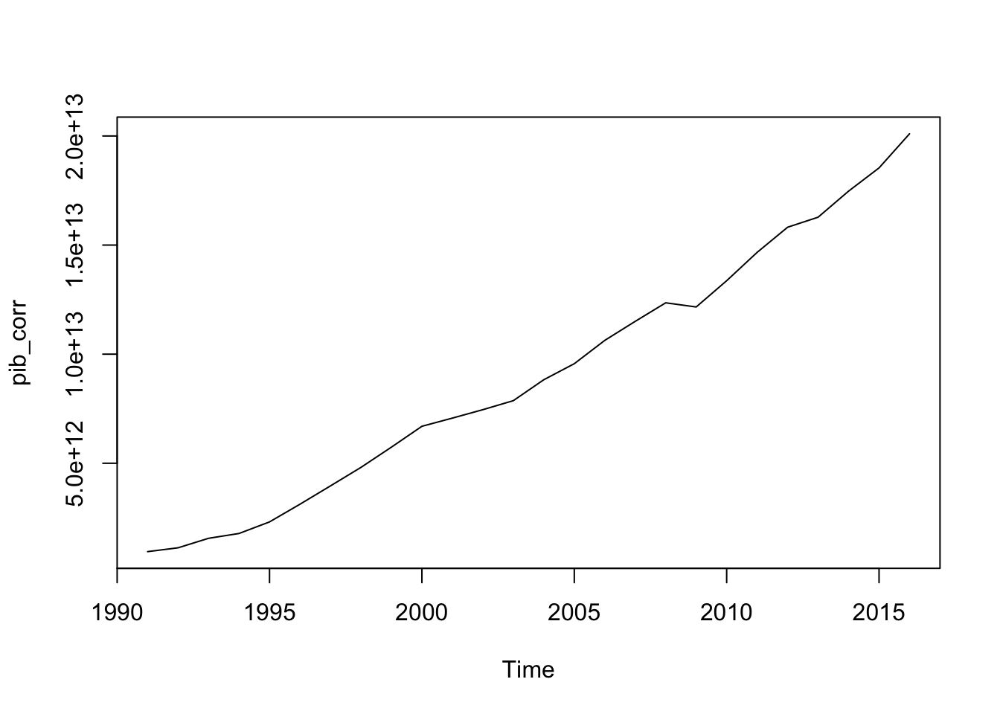
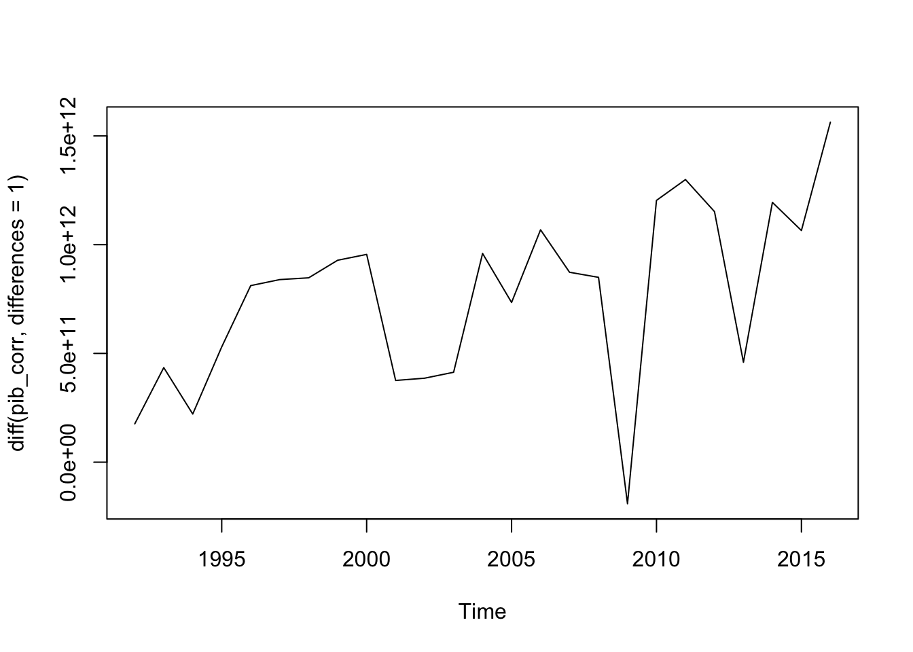
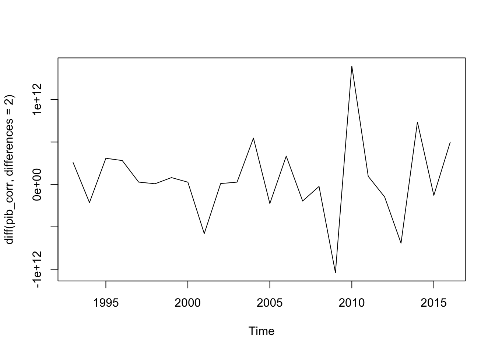

Chapter 4 Orden Integración PIB a precios corrientes
La serie de PIB a precios corrientes parece ser una serie con un orden de integración, esto será corroborado con las pruebas de hipótesis presentadas por Dickey & Fuller, tal y como ya se ha presentado en la sección previa.
gf1 <- grafica_serie(base_in = series_db,
eje_y = 'GDP_corriente',
titulo = 'PIB a precios corrientes',
titulo_y = 'PIB Corriente')
gf1
En primer lugar necesitamos realizar la lectura de los datos como un objeto ts y posteriormente una regresión con una constante y tendencia temporal será estimada, en este caso en particular, no será necesario agregar lags a la estimación ya que no hay evidencia de presencia de autocorrelaciones y autocorrelaciones parciales diferentes de cero, por lo que podemos asegurar un proceso esférico del error. Incluir desde uno hasta el cuarto lag resultaban ser no significativos.
pib_corr <- ts(series_db$GDP_corriente,start = 1991, end = 2016, frequency = 1)
pib_corr.ct <- ur.df(pib_corr,lags=3,type='trend')
summary(pib_corr.ct)##
## ###############################################
## # Augmented Dickey-Fuller Test Unit Root Test #
## ###############################################
##
## Test regression trend
##
##
## Call:
## lm(formula = z.diff ~ z.lag.1 + 1 + tt + z.diff.lag)
##
## Residuals:
## Min 1Q Median 3Q Max
## -9.516e+11 -2.101e+11 6.205e+10 2.318e+11 4.160e+11
##
## Coefficients:
## Estimate Std. Error t value Pr(>|t|)
## (Intercept) 8.996e+11 6.242e+11 1.441 0.169
## z.lag.1 4.345e-02 2.574e-01 0.169 0.868
## tt 3.994e+09 1.925e+11 0.021 0.984
## z.diff.lag1 -1.065e-01 2.791e-01 -0.381 0.708
## z.diff.lag2 -1.885e-01 2.615e-01 -0.721 0.481
## z.diff.lag3 -4.611e-01 2.384e-01 -1.934 0.071 .
## ---
## Signif. codes: 0 '***' 0.001 '**' 0.01 '*' 0.05 '.' 0.1 ' ' 1
##
## Residual standard error: 3.648e+11 on 16 degrees of freedom
## Multiple R-squared: 0.3232, Adjusted R-squared: 0.1117
## F-statistic: 1.528 on 5 and 16 DF, p-value: 0.2364
##
##
## Value of test-statistic is: 0.1688 5.7828 2.9826
##
## Critical values for test statistics:
## 1pct 5pct 10pct
## tau3 -4.15 -3.50 -3.18
## phi2 7.02 5.13 4.31
## phi3 9.31 6.73 5.61plot(pib_corr.ct)Ahora bien la hipótesis \(\phi_3\) es probada bajo una usual prueba F, es decir, \(\phi_3=(a_0,\gamma,a_2) = (a_0,0,0)\). Esto es, se han colocado restricciones igual a cero a la tendencia temporal y el lag del la variable.
El valor del estadístico es
pib_corr.ct@teststat## tau3 phi2 phi3
## statistic 0.1688183 5.782813 2.982571Debemos recordar que se deben consular los valores críticos propuestas por Dickey and Fuller. Los valores críticos para una muestra de tamaño 100 y niveles de significancia del 10%,5% y 1% se muestran a continuación
pib_corr.ct@cval## 1pct 5pct 10pct
## tau3 -4.15 -3.50 -3.18
## phi2 7.02 5.13 4.31
## phi3 9.31 6.73 5.61Por lo tanto, la hipótesis nula no puede ser rechazada, lo cual implica que la serie contiene una raíz unitaria. Esto puede ser reiterado con el estadístico \(\tau_3\) y para la variable z.lag.1. Los valores críticos relevantes que debemos utilizar ahora son los de Fuller[1976], los cuales se muestran para una muestra de tamaño 100.
Luego entonces, la presencia de una raíz unitaria no puede rechazada. El siguiente paso, es probar si la serie es una caminata aleatoria con o sin drift (constante).
El estadístico relevante es \(\phi_2\) \((\gamma=a_0=a_2=0)\) el cual tiene un valor de 3.738072, con valores críticos de 7.02 5.13 4.31 para niveles de significancia de 1%, 5% y 10% respectivamente. La conclusión es entonces que la serie no se comporta como una caminata aleatoria pura, ya que tiene una constante incluida en el proceso, así como un orden de integración.
Uno procede entonces a estimar la ecuación \(\nabla y_t = a_0 + \gamma y_{t-1} + \epsilon_t\) basado en los resultados obtenidos por la prueba \(\phi_3\). Los resultados se muestran a continuación:
pib_corr.co <- ur.df(pib_corr,lags=3,type='drift')
summary(pib_corr.co)##
## ###############################################
## # Augmented Dickey-Fuller Test Unit Root Test #
## ###############################################
##
## Test regression drift
##
##
## Call:
## lm(formula = z.diff ~ z.lag.1 + 1 + z.diff.lag)
##
## Residuals:
## Min 1Q Median 3Q Max
## -9.511e+11 -2.104e+11 6.060e+10 2.324e+11 4.157e+11
##
## Coefficients:
## Estimate Std. Error t value Pr(>|t|)
## (Intercept) 9.113e+11 2.589e+11 3.519 0.00263 **
## z.lag.1 4.877e-02 1.937e-02 2.517 0.02214 *
## z.diff.lag1 -1.095e-01 2.292e-01 -0.478 0.63879
## z.diff.lag2 -1.911e-01 2.243e-01 -0.852 0.40615
## z.diff.lag3 -4.623e-01 2.246e-01 -2.058 0.05527 .
## ---
## Signif. codes: 0 '***' 0.001 '**' 0.01 '*' 0.05 '.' 0.1 ' ' 1
##
## Residual standard error: 3.539e+11 on 17 degrees of freedom
## Multiple R-squared: 0.3232, Adjusted R-squared: 0.164
## F-statistic: 2.03 on 4 and 17 DF, p-value: 0.1357
##
##
## Value of test-statistic is: 2.5174 9.2159
##
## Critical values for test statistics:
## 1pct 5pct 10pct
## tau2 -3.58 -2.93 -2.60
## phi1 7.06 4.86 3.94plot(pib_corr.co)Con el fin de completar la prueba, ahora se valida si en este modelo un término constante hace falta. Las pruebas se muestran a continuación:
pib_corr.co@teststat## tau2 phi1
## statistic 2.517406 9.215881pib_corr.co@cval## 1pct 5pct 10pct
## tau2 -3.58 -2.93 -2.60
## phi1 7.06 4.86 3.94El valor del estadístico \(\phi_1\) que prueba \(\gamma=a_0=0\) resulta ser significativo comparado con los valores críticos mostrados.
Por lo tanto, se puede concluir que la serie contiene un raíz unitaria y una tendencia constante en el proceso generador de los datos.
Finalmente, se probará si diferenciando la serie una vez es suficiente para alcanzar estacionariedad. La prueba se logra utilizando como insumo para la regresión a la serie diferenciada una vez.
pib_corr2 <- diff(pib_corr)
pib_corr2.ct <- ur.df(pib_corr2,type="none",lags=1)
summary(pib_corr2.ct)##
## ###############################################
## # Augmented Dickey-Fuller Test Unit Root Test #
## ###############################################
##
## Test regression none
##
##
## Call:
## lm(formula = z.diff ~ z.lag.1 - 1 + z.diff.lag)
##
## Residuals:
## Min 1Q Median 3Q Max
## -1.034e+12 -8.491e+10 7.674e+10 3.365e+11 9.722e+11
##
## Coefficients:
## Estimate Std. Error t value Pr(>|t|)
## z.lag.1 -0.01871 0.12262 -0.153 0.8802
## z.diff.lag -0.40253 0.21583 -1.865 0.0762 .
## ---
## Signif. codes: 0 '***' 0.001 '**' 0.01 '*' 0.05 '.' 0.1 ' ' 1
##
## Residual standard error: 4.633e+11 on 21 degrees of freedom
## Multiple R-squared: 0.1665, Adjusted R-squared: 0.08708
## F-statistic: 2.097 on 2 and 21 DF, p-value: 0.1478
##
##
## Value of test-statistic is: -0.1526
##
## Critical values for test statistics:
## 1pct 5pct 10pct
## tau1 -2.66 -1.95 -1.6pib_corr2 <- diff(pib_corr,differences = 2)
pib_corr2.ct <- ur.df(pib_corr2,type="none",lags=0)
summary(pib_corr2.ct)##
## ###############################################
## # Augmented Dickey-Fuller Test Unit Root Test #
## ###############################################
##
## Test regression none
##
##
## Call:
## lm(formula = z.diff ~ z.lag.1 - 1)
##
## Residuals:
## Min 1Q Median 3Q Max
## -1.051e+12 -1.053e+11 6.029e+10 3.251e+11 9.639e+11
##
## Coefficients:
## Estimate Std. Error t value Pr(>|t|)
## z.lag.1 -1.4139 0.1981 -7.137 3.72e-07 ***
## ---
## Signif. codes: 0 '***' 0.001 '**' 0.01 '*' 0.05 '.' 0.1 ' ' 1
##
## Residual standard error: 4.529e+11 on 22 degrees of freedom
## Multiple R-squared: 0.6984, Adjusted R-squared: 0.6847
## F-statistic: 50.94 on 1 and 22 DF, p-value: 3.72e-07
##
##
## Value of test-statistic is: -7.137
##
## Critical values for test statistics:
## 1pct 5pct 10pct
## tau1 -2.66 -1.95 -1.6pib_corr2.ct@teststat## tau1
## statistic -7.136979pib_corr2.ct@cval## 1pct 5pct 10pct
## tau1 -2.66 -1.95 -1.6La hipótesis de que el PIB a precios corrientes es \(I(2)\) se comprueba rápidamente dado el estadístico \(t\) con valor de -2.681622. ya que diferenciando solo una vez la serie no fue suficiente para hacer estacionaria la serie.
Por lo tanto. La serie del PIB a precios corrientes es \(I(2)\) y de la forma \(\nabla y_t = a_0 + \gamma y_{t-1} + \epsilon_t\).
plot(pib_corr2)
acf(pib_corr2)
plot(pib_corr2.ct)
plot(pib_corr)
plot(diff(pib_corr,differences = 1))
plot(diff(pib_corr,differences = 2))
var(pib_corr)## [1] 3.387077e+25var(diff(pib_corr, differences = 1))## [1] 1.666134e+23var(diff(pib_corr, differences = 2))## [1] 2.345595e+23var(diff(pib_corr, differences = 3))## [1] 6.799588e+23